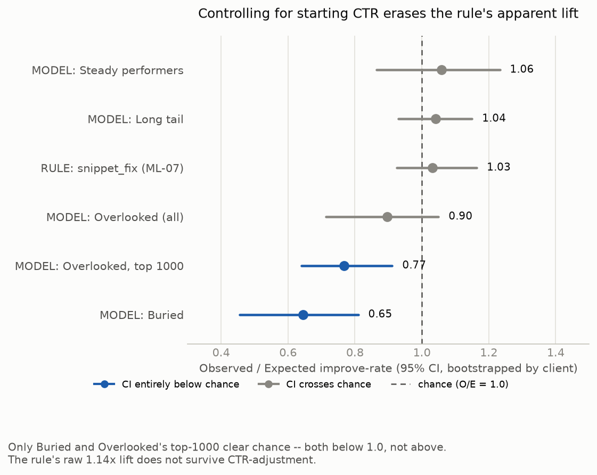
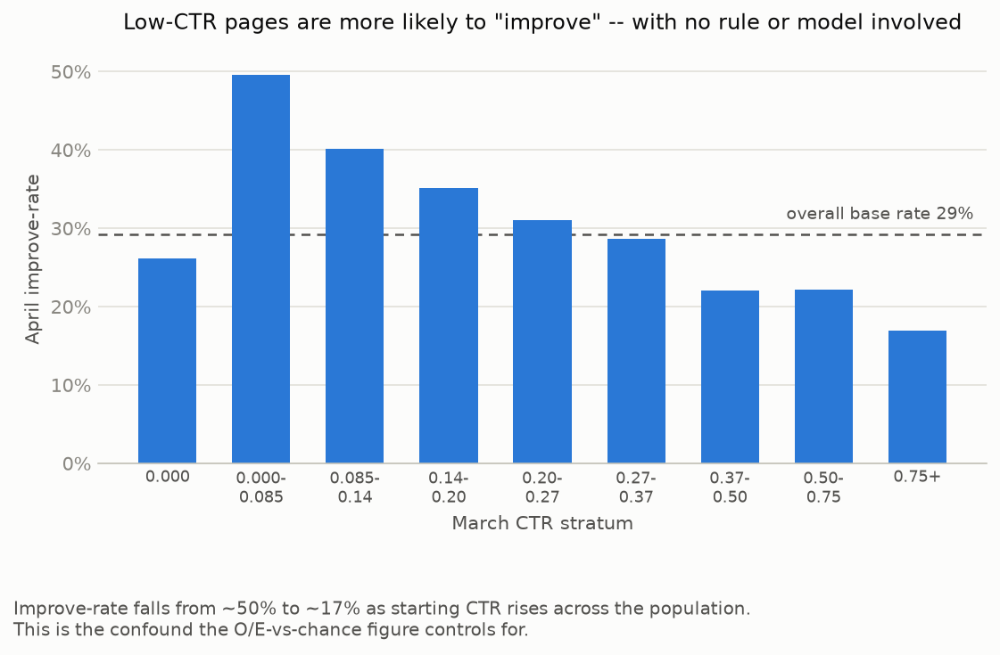
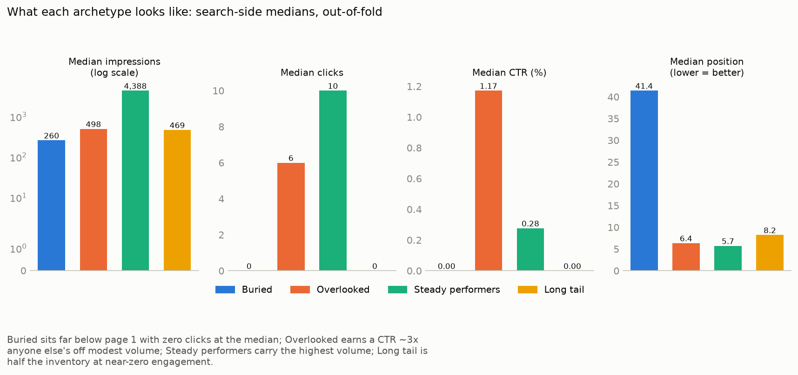
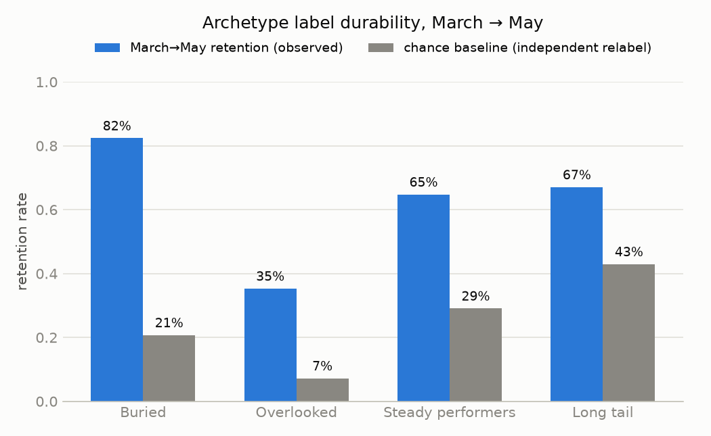
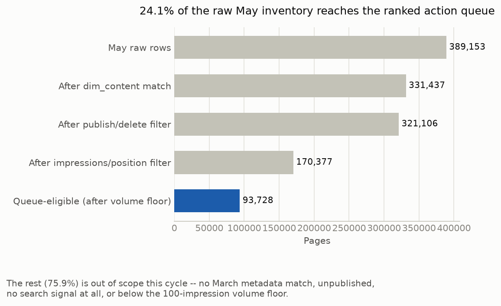
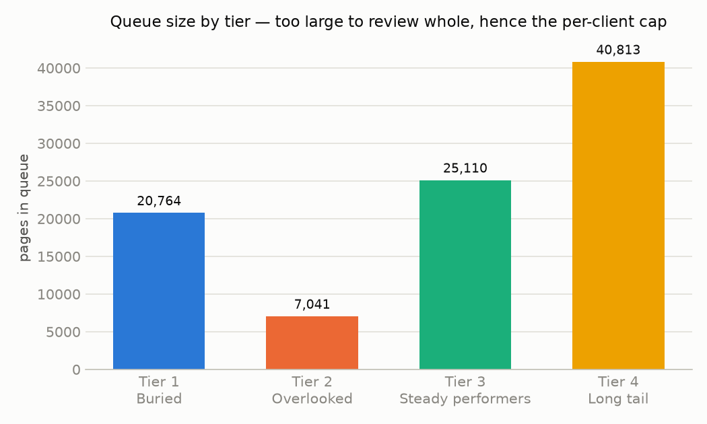

On the Limits of Rule-Based and Unsupervised Content Triage
A transparent CTR rule looked like it beat chance by 14%. Once starting CTR is controlled for, it doesn't — and neither does an unsupervised archetype clustering built to replace it. Two findings survive, and both point down.
Abstract
FlyRank's content teams work a client portfolio of hundreds of thousands of live search pages, only a small fraction of which can get editorial attention in any given cycle — so which pages are actually worth it, and does a fixed CTR-based rule pick the right ones? Using one month of search-performance data from the FlyRank ML Internship warehouse (331,437 content items, aggregated from 9.8M daily fact rows), a transparent baseline rule and an unsupervised K-Means clustering (k=4, four search-side features, GroupKFold-by-client validation) were each evaluated against the same April outcome window.
The rule's raw 1.14× lift over the base improve-rate evaporates once starting CTR is controlled for (O/E 1.03, 95% CI [0.92, 1.16]) — the lift was regression to the mean, not rule skill — and three of the four archetype groups show no better discrimination than chance either.
Two results survive: the Buried archetype scores meaningfully below chance (O/E 0.645, CI [0.456, 0.810], independently reproduced at 0.667) and is also the most durable label across months (82.4% March→May retention vs. 20.7% expected by chance), making it the only recommendation with two independent signals in agreement. This output is decision-support for a monthly content-review queue, not a causal or predictive claim.
Glossary
A quick lookup for the terms below, for readers skimming to Methodology or Results without a stats background. Skip this section if you're already comfortable with the vocabulary.
- CI — Confidence interval. The range an estimate would plausibly fall in if the study were repeated; a CI that includes 1.0 (for an O/E ratio) means "indistinguishable from chance."
- O/E ratio — Observed ÷ Expected. Asks "did this group do better than we'd expect given who's in it," not just "did it beat everyone else." Expected is the population's improve-rate re-weighted to the group's own starting-CTR mix (see Methodology's Standardization note), so a group isn't credited just for containing more low-CTR pages, which improve more easily on their own.
- Base rate — How often something happens across the whole population, with no filtering applied. The number any rule or model needs to beat to be worth using.
- Regression to the mean — A group that started unusually low (or high) tends to drift back toward average on its own, with no intervention required. This is what made the baseline rule's raw lift look real when it wasn't.
- K-Means / centroid — K-Means groups pages into a fixed number of clusters by minimizing distance to each cluster's "average page" (its centroid). Every archetype in this paper is one such cluster.
- Silhouette score — A 0–1 score for how well-separated clusters are from each other. This paper's 0.387 is a moderate score, not a strong one — see Methodology.
- GroupKFold — A cross-validation split that keeps every page from the same client entirely inside one fold, so a client's own pages can never leak between training and testing.
- Volume floor — A minimum impression count a page must clear to be included, so a handful of views doesn't get treated as a reliable signal.
- Multiple comparisons / Bonferroni / FDR correction — When many groups are each tested against chance, some will clear the bar by luck alone. Bonferroni and FDR are standard statistical corrections for that risk; neither is applied here (see Methodology), which is why the results are framed as exploratory rather than confirmatory.
Introduction
This work starts from FlyRank's own operating problem. The client portfolio this dataset is drawn from carries hundreds of thousands of live search pages, and a content team cannot manually review each one every month. The practical question is triage: which pages are worth a snippet rewrite, which are worth leaving alone, and which are quietly costing traffic by staying online at all? The unit of analysis is one content item (page), described only by observable 90-day search-side signals and metadata — never by semantic content or text.
The cost of getting this wrong is not a single bad call — it lands in batches. Pruning a hidden gem because it resembled the wrong group loses that traffic permanently; spending rewrite capacity on pages that were never going to move wastes editorial time across every page carrying that label. A transparent rule already exists (flag low-CTR pages relative to their position peers); this work asks whether an unsupervised clustering of search behavior finds a better way to route the queue — and, honestly, whether either approach clears the bar of "better than doing nothing."
The strongest pairwise correlation among the candidate signals was 0.33 (log-impressions × word count) — no single pair was redundant enough to collapse into a fixed if-statement axis, which is why a multi-dimensional clustering is worth trying at all.
Data
Release: Hugging Face hf://datasets/FlyRank/internship-warehouse. Tables: fact_content_daily_performance, partition month=2026-03 (the development month), joined to dim_content.parquet for metadata; dim_clients read only to check data-availability windows, never as a feature. The _sample table — a sealed, later month — was never touched, to avoid peeking at the outcome window used for evaluation.
Date window: report_date between 2026-03-01 and 2026-03-31 (31 days). Grain: one row per content item. The fact table (9,841,378 rows, 331,437 distinct content ids) was aggregated to one row per item and joined to dim_content, with zero duplicate ids on either side.
What was excluded, and why
| Excluded | Reason |
|---|---|
| Hashed content / client / keyword / URL ids | Pseudonymous join keys with no ordinal meaning — using one as a feature would let a model memorize identity instead of learning from behavior. |
engagement_rate | Proven leak in a held-out probe: honest-feature ROC AUC 0.856 climbs to 0.877 once added, because it's engineered directly from the label source. |
| GA4 columns where unavailable | Zero-filled placeholders, not real zero engagement. Row-level GA4 coverage is only 4.2% True (65.1% False, 30.7% NULL); even content-level, only 27.3% of pages carry any real GA4 history. |
trend_direction, trend_pct | Label-derived — the exact columns a supervised target would be built from. |
content_updated_date | Live, mutable dimension (242 distinct values, max date beyond the data window), no snapshot version in this release. |
| Optimization dates | Decision-derived and post-March; only 8.7% of items carry them, in a partial rollout. |
No client names, domains, URLs, page titles, or raw search queries exist anywhere in this release's schema.
Methodology
Features (4, all March search-side signals only): log_impressions, log_clicks, ctr, avg_position.
An earlier feature set added word_count and content-type/intent one-hots. It produced a k=2 split that a single depth-1 rule on "has word count" reproduced at 99.17% accuracy — a data-availability artifact (word count missing for ~30% of pages, median-filled, manufacturing a fake gap), not a real archetype. engaged_sessions was dropped for the same reason: one resulting cluster sat at exactly 100% GA4 coverage — it was finding the GA4-covered slice of the inventory, not a behavioral pattern.
Method: plain K-Means on standardized features, seed 42 — the scaler is re-fit inside each training fold only (never on the full dataset), so no fold's test statistics leak into its own standardization. k selection: swept k=2–10 inside each fold's training clients, rejecting any k whose smallest cluster fell under 2% of pages; k=4 won on mean silhouette (0.387, about 1.7 SD clear of the runner-up). 0.387 is a moderate score, not a strong one — the four groups are a real but overlapping structure, not cleanly separated clusters, which is part of why they're read as a review lens rather than a certainty (see Limitations).
Validation — GroupKFold by client, not by time. The risk here is a page's own client leaking across train/test, not future leakage. A single 80/20 grouped split was tried first and rejected: across 5 seeds, the held-out page share swung from 0.5% to 29.6%, and at one seed the held-out set was 100% one content type versus 70% in training — not a stable estimate. 5-fold GroupKFold was used instead, with out-of-fold labels aligned to a reference labeling via Hungarian matching on centroid distance.
Outcome definition: a page "improved" if its April CTR exceeded its March CTR, requiring April impressions ≥ 100. An earlier definition (reach the March median CTR of one's own position tier) was dropped after discovering two tiers have a median CTR of exactly 0 — it inflated the trivial base rate to 51.5%.
Baseline: a transparent rule — flag a page if it clears a 100-impression volume floor and its CTR sits below the peer median for its position tier. Reproduced here bit-for-bit against the modeling population: 101,409 shared rows, score agreement 1.0000. That 101,409 is the 331,437 raw March content items after the same 100-impression volume floor plus a complete-feature requirement (all four search-side features present); the remaining ~69% is mostly pages below the volume floor, which is also why the ranked queue in Recommendations only ever reaches a minority of the raw inventory.
Standardization. Reported O/E ratios use indirect standardization: the expected improve-rate for a group is the population's improve-rate re-weighted to that group's March-CTR-stratum composition (the same 9 strata plotted in the confound chart below), so a group isn't credited or penalized for simply containing more low- or high-CTR pages than average.
Leakage check: a positive-control probe (predicting "improved" from honest features vs. honest + the leaked outcome CTR) scored AUC 0.637 honest vs. 0.940 leaked — confirming the evaluation pipeline detects a real leak when one is deliberately introduced.
Multiple comparisons. Six groups are checked against chance in Results (the rule, four archetypes, and one archetype subset) without a Bonferroni or FDR correction. This is reported as exploratory, decision-support evidence, not a confirmatory hypothesis test — which is also why the ranked recommendations weight durability alongside O/E rather than treating any single CI as proof.
Results
Raw, the baseline rule looks like it works: flagged pages improve at 33.4% versus a 29.3% base rate — a 1.14× lift. That lift does not survive controlling for where a page started. Using indirect standardization (observed ÷ expected improve-rate, 95% CI bootstrapped by client, B=300), the rule's O/E is 1.03, CI [0.92, 1.16] — indistinguishable from chance.

| Group | n | O/E | 95% CI | Clears chance? |
|---|---|---|---|---|
| Buried | 9,663 | 0.645 | [0.456, 0.810] | Below 1.0 |
| Overlooked, top-1000 by centroid distance | 1,000 | 0.768 | [0.640, 0.912] | Below 1.0 |
| Overlooked (full group) | 5,715 | 0.896 | [0.714, 1.050] | No — crosses 1.0 |
| Rule: snippet_fix (ML-07) | 36,704 | 1.032 | [0.925, 1.164] | No — crosses 1.0 |
| Long tail | 42,911 | 1.041 | [0.930, 1.150] | No — crosses 1.0 |
| Steady performers | 30,185 | 1.059 | [0.865, 1.233] | No — crosses 1.0 |
Exact figures behind the chart above, for reference rather than chart-reading. Six groups tested against chance without a multiple-comparisons correction — see Methodology.
The reason is visible directly: improve-rate falls from roughly 50% down to roughly 17% as starting March CTR rises, independent of any rule or archetype label. The rule mostly selected low-CTR pages, and low-CTR pages regress toward a higher improve-rate on their own.

Stated plainly: once starting CTR is controlled for, neither the baseline rule nor the archetype clustering demonstrates skill at predicting April CTR movement. That is the paper's headline finding, not an aside.
Two results survive this scrutiny, and both point down — but they don't carry equal weight:
- Buried, the whole group, 9,663 pages — O/E 0.645, 95% CI [0.456, 0.810], independently recomputed later at 0.667, CI [0.470, 0.855]. Both intervals sit entirely below 1.0. This is the paper's primary finding.
- Overlooked, restricted after the fact to its top-1000 pages by centroid distance — O/E 0.768, CI [0.640, 0.912]. The full Overlooked group (5,715 pages) does not clear chance on its own (O/E 0.896, CI [0.714, 1.050]); the top-1000 cut was chosen after seeing that result, to ask whether the most archetype-typical pages behave differently — it is a secondary, post-hoc observation, not independent confirmation, and it isn't corrected for testing six groups. It supports "re-verify," not "act now" — see Ranked recommendations.

Buried is also the most durable label across months: 82.4% of March-labeled Buried pages are still labeled Buried in May, against a 20.7% rate expected by chance under independent relabeling — the most durable of the four archetypes. A below-chance outcome and a durable label is a combination no other archetype has, which is why it is the paper's only high-confidence recommendation.

The rule and the clustering also disagree sharply in practice: the baseline rule never once flags an Overlooked page — its "CTR below peer median" logic and Overlooked's "CTR well above peers" profile point in opposite directions by construction.
Limitations & Honest Framing
- No causal claim. Every number here is an observed association in one non-intervention window (March→April), not the effect of taking any action. "O/E below 1.0" means observed improve-rate came in lower than a CTR-adjusted expectation — not that the label caused pages to get worse.
- Uneven attrition biases the comparison. 99.8% of Steady-performer pages survive to the April volume floor versus 77.3% of Buried pages — the true Buried result is probably worse than 0.645, since dropped pages are disproportionately the weakest ones.
- 44 clients, one at 21.3% of the population. Wide confidence intervals, and a real risk that a pattern is one large client's behavior wearing an archetype's name. The GroupKFold-by-client design guards against this but does not eliminate the concentration.
- On-site behavior (GA4) is excluded entirely. Only 27.3% of pages carry real GA4 history; every archetype here describes search-side behavior only, never what happens after the click.
- No "ranking lags demand" archetype exists in this feature set. An earlier run surfaced a 5th cluster resembling exactly that, but it vanished once a leaking feature was dropped — it was a measurement artifact, not a real page type.
- A small burst-then-revert data-quality pattern exists in the raw signal (0.74% of the scored queue), consistent with automated crawling or rank-tracking activity rather than organic ranking — flagged, not filtered, since it wasn't material to the results.
- Clusters are a lens, not a label. They group pages for review; they are not a certified fact about any individual page.
- Coverage is partial. The scored action queue reaches 24.1% of raw May inventory; 75.9% falls outside scope (unpublished, missing signal, or below the volume floor).

Ranked Recommendations
Tiered by evidence × durability, not by raw lift — Results shows raw lift alone cannot be trusted.
| Tier | Archetype | Action | Why | Pages (May) |
|---|---|---|---|---|
| 1 — act now | Buried | prune / rewrite | O/E 0.645–0.667 (CI excludes 1.0, two independent runs) and 82.4% durable — the only archetype where both signals agree | 20,764 |
| 2 — re-verify before acting | Overlooked | improve / expand | O/E crosses 1.0 (no clear effect) and only 35.3% durable — queue position reflects instability, not a case against ever improving these pages | 7,041 |
| 3 — protect | Steady performers | protect / monitor | O/E at chance — no evidence further action helps — but highest median impressions/CTR, real value at stake if neglected | 25,110 |
| 4 — light monitor | Long tail | monitor | O/E at chance, near-zero median CTR — lowest value at stake | 40,813 |

Review load: capped at the top 20 pages per client per review cycle — covers 31.2% of Tier-1 clients fully at 2.4% of Tier-1's total page count.
Retrain triggers (midpoint of each archetype's baseline and its own chance retention rate): overall retention below 49.4%; Buried below 51.6% (Tier 1's entire justification rests on this number); Overlooked below 21.3%; Long tail below 55.0%; Steady performers below 46.9%. Also: coverage-funnel drift from 24.1%, client-concentration drift from 21.3%, or Buried's O/E confidence interval crossing 1.0 on a fresh re-run.
total_impressions alone. This queue is a coarse first pass a future system could act on per cluster, not the final word on what clustering can do.
Reproducibility
Every notebook below is committed to the repository and runs top to bottom. Random seed fixed at 42 throughout (K-Means, cross-validation, bootstraps). Environment: Python 3.12.10, numpy 2.2.4, pandas 2.2.3, scikit-learn 1.9.0, duckdb 1.2.1, pinned in requirements.txt.
- w01 — Research question
- w02 — ML task framing
- w03 — Data contract
- w03 — Feature leakage check
- w04 — Baseline rule & score
- w05 — Model (clustering, validation, O/E results)
- w06 — Validation audit (stability, positive control)
- w07 — Action playbook (ranked queue)
- capstone.ipynb — this paper's source notebook
Heavy per-row intermediates (feature parquets, the full ranked queue CSV) are intentionally gitignored — the re-run path is w05_model.ipynb → w06_validation_audit.ipynb → w07_action_playbook.ipynb against the same warehouse partition. No model object is persisted anywhere in the project; centroid values and the metrics receipts file (work/outputs/ml10_playbook_metrics.json) are the durable record. Full repository: github.com/jerovernay/FlyRank-Internship.